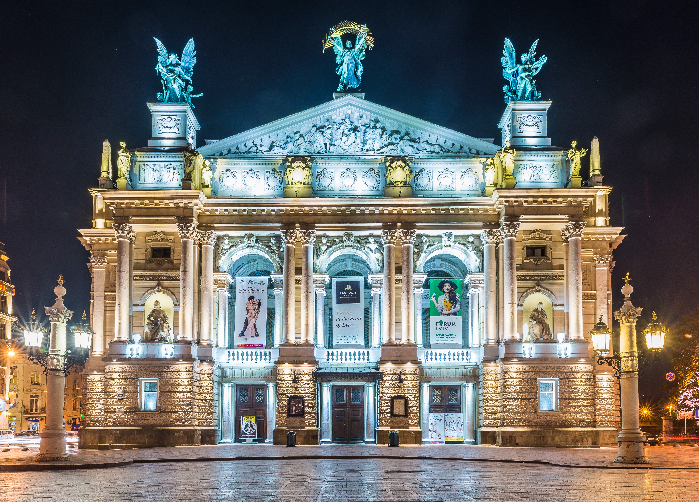

Місто засновано за часів правління Данила Галицького, перша письмова згадка про місто датується 1256 роком. Близько 1272
місто стало столицею Галицько-Волинського князівства (Руського Королівства).
Невдовзі, після смерті князя Юрія II
(†1340), місто на понад чотири століття опинилося під владою Королівства Польського. У 1356 Львів отримав Магдебурзьке
право. В епоху Середньовіччя місто стало важливим торговельним центром Галичини. Після розпаду Австро-Угорщини, Львів
деякий час був столицею Західноукраїнської Народної Республіки, але після українсько-польської битви за місто в
листопаді 1918 був окупований Польщею.
